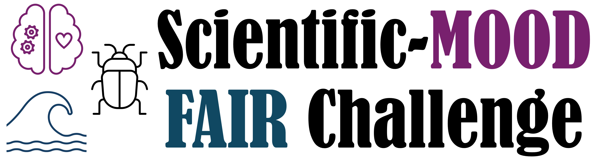

Scientific Modeling out of Distribution (Scientific-Mood) ML Challenge
The HDR ML Challenge program is hosting its second FAIR challenge, presenting three scientific benchmarks for modeling out of distribution in critical areas: Neural Forecasting, Climate Prediction using Ecological Data, and Coastal Flooding Prediction over time.
Machine learning models excel at interpolating across training datasets. In this challenge, we ask models to extend beyond their training by performing out-of-domain extrapolation on practical, critical scientific processes that have not yet been well studied.
As with the first challenge, we are hosting three distinct sub-challenges and one combined challenge. Our focus:
- Neural Forecasting: Forecast activations of a cluster of neurons from prior signals—vital for brain-chip interfaces and artificial limb control.
- Climate prediction using ecological data: Predict drought conditions over multiple timescales using images of ecological indicator organisms (ground beetles).
- Coastal flooding prediction over time: Model sea levels at multiple sites across decades to predict coastal floods driven by climate change.
Challenge Organizers
Imageomics
- Elizabeth G. Campolongo
- Wei-Lun Chao
- Chandra Earl (NEON)
- Hilmar Lapp
- Kayla Perry
- Sydne Record
- Eric Sokol (NEON)
A3D3
- Yuan-Tang Chou
- Ekaterina Govorkova
- Philip Harris
- Shih-Chieh Hsu
- Mark S. Neubauer
- Amy Orsborn
- Leo Scholl
- Eli Shlizerman
iHARP
- Ratnaksha Lele
- Aneesh Subramanian
- Josephine Namayanja
- Bayu Tama
- Vandana Janeja
Student Organizers
Imageomics
- David E. Carlyn
- Alyson East
- Connor Kilrain
- Fangxun Liu
- Zheda Mai
- S M Rayeed
- Jiaman Wu
A3D3
- Jingyuan Li
iHARP
- Sai Vikas Amaraneni
- Emam Hossain
- Maloy Kumar Devnath
- Subhankar Ghosh